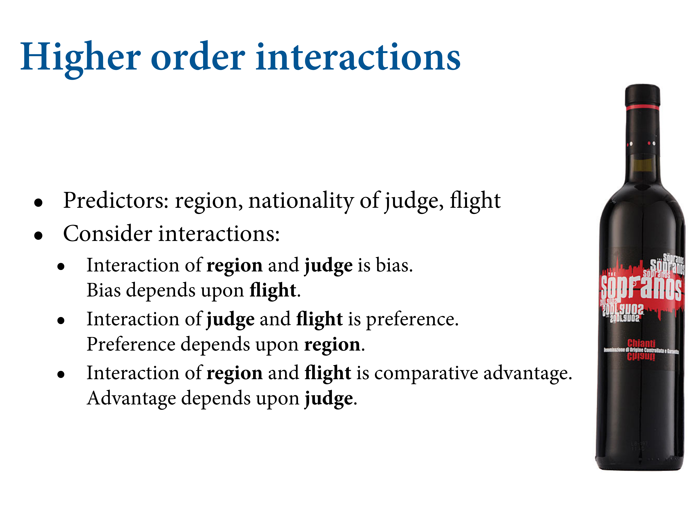
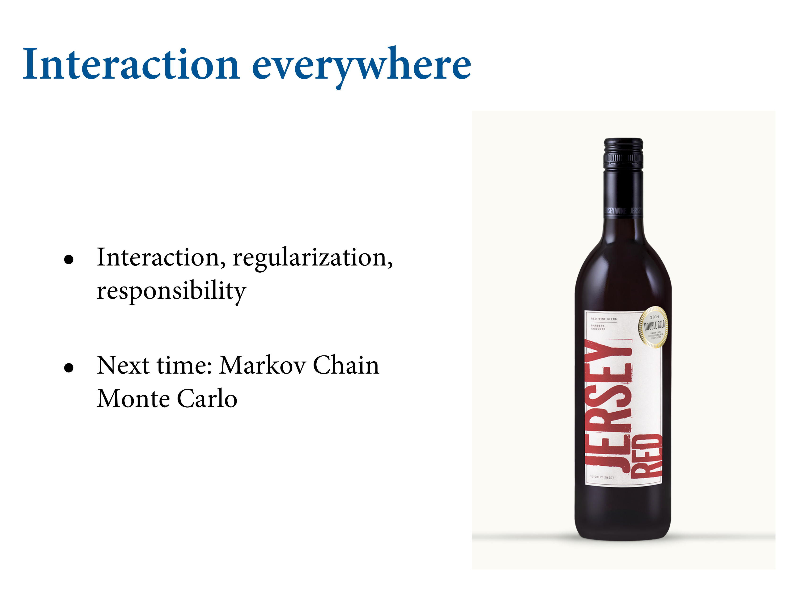

8.3 Continuous interactions
Interpretation is much harder with continuous variables, even though the mathematics of the model are essentially the same.
8.3.1. A winter flower
library(rethinking)
data(tulips)
d <- tulips
str(d)## 'data.frame': 27 obs. of 4 variables:
## $ bed : Factor w/ 3 levels "a","b","c": 1 1 1 1 1 1 1 1 1 2 ...
## $ water : int 1 1 1 2 2 2 3 3 3 1 ...
## $ shade : int 1 2 3 1 2 3 1 2 3 1 ...
## $ blooms: num 0 0 111 183.5 59.2 ...d$blooms_std <- d$blooms / max(d$blooms)
d$water_cent <- d$water - mean(d$water)
d$shade_cent <- d$shade - mean(d$shade)Now blooms_std ranges from 0 to 1, and both water_cent and shade_cent range from −1 to 1. I’ve scaled blooms by its maximum observed value, for three reasons. First, the large values on the raw scale will make optimization difficult. Second, it will be easier to assign a reasonable prior this way. Third, we don’t want to standardize blooms, because zero is a meaningful boundary we want to preserve.

Now here both predictors are continuous. Basically works the same way, but much harder to think about. Experimental example but works the same in observationals. 3 variables of interest plus the experimental block which you want to control for. We’re going to leave out block and add that in later. Three levels of water and shade, with the outcome bloom area.

They’re categorical, but in principle they’re continuous. This is the conventional form of the interaction. When you add an interaction of continous variables, you multiply the predictors and add a third coefficient. First is to understand why this happens.
Here is the conventional form on top.
![It means we replace one of these slopes with another linear model. Now $W$ will be the centered version, as with $S$ for shade. We've replaced the $\beta$ coefficient in front of water level with $\gamma$, and $\gamma$ isn't a parameter but a linear model. Another one. We can have as many as we want. And this linear model now tells us the slope. And the slope has two parameters in it. One is the ordinary slope, $\beta_W$, and the other $\beta_{WS}$, is the interaction. That parameter measures the marginal effect of changing shade on the impact of water. So we're directly assuming that the effect of water depends on shade. And we make the submodel, which is linear because we're still in geocentric world.](slides/L09/30.png)
It means we replace one of these slopes with another linear model. Now \(W\) will be the centered version, as with \(S\) for shade. We’ve replaced the \(\beta\) coefficient in front of water level with \(\gamma\), and \(\gamma\) isn’t a parameter but a linear model. Another one. We can have as many as we want. And this linear model now tells us the slope. And the slope has two parameters in it. One is the ordinary slope, \(\beta_W\), and the other \(\beta_{WS}\), is the interaction. That parameter measures the marginal effect of changing shade on the impact of water. So we’re directly assuming that the effect of water depends on shade. And we make the submodel, which is linear because we’re still in geocentric world.

It doesnt’ matter which one you pick, you get the same equation. Basically, this is where it comes from - assuming I want the association of each with the outcome to be dependent on the other’s value, so let’s make a linear model of that. Liek a regression within a regression.

Let’s fit this. Contrasting one with and without an interaction. Main effect of water, main effect of shade. With priors. But we’ve already got the problem of how to visualise this.
a <- rnorm( 1e4 , 0.5 , 1 ); sum( a < 0 | a > 1 ) / length( a )## [1] 0.6166If it’s 0.5 units from the mean to zero, then a standard deviation of 0.25 should put only 5% of the mass outside the valid internal. Let’s see:
a <- rnorm( 1e4 , 0.5 , 0.25 ); sum( a < 0 | a > 1 ) / length( a )## [1] 0.0474Much better.
m8.4 <- quap(
alist(
blooms_std ~ dnorm( mu , sigma ) ,
mu <- a + bw*water_cent + bs*shade_cent ,
a ~ dnorm( 0.5 , 0.25 ) ,
bw ~ dnorm( 0 , 0.25 ) ,
bs ~ dnorm( 0 , 0.25 ) ,
sigma ~ dexp( 1 )
) , data=d )Now with the interaction:
m8.5 <- quap(
alist(
blooms_std ~ dnorm( mu , sigma ) ,
mu <- a + bw*water_cent + bs*shade_cent + bws*water_cent*shade_cent ,
a ~ dnorm( 0.5 , 0.25 ) ,
bw ~ dnorm( 0 , 0.25 ) ,
bs ~ dnorm( 0 , 0.25 ) ,
bws ~ dnorm( 0 , 0.25 ) ,
sigma ~ dexp( 1 )
) , data=d )8.3.3. Plotting posterior predictions

Related frames that tell a bigger story. Going to have graphs in triptych form. Nothing binding you to only three, but that’s the minimum. You can do 20 if you think that’s necessary.
par(mfrow=c(1,3)) # 3 plots in 1 row
for ( s in -1:1 ) {
idx <- which( d$shade_cent==s )
plot( d$water_cent[idx] , d$blooms_std[idx] , xlim=c(-1,1) , ylim=c(0,1) ,
xlab="water" , ylab="blooms" , pch=16 , col=rangi2 )
mu <- link( m8.4 , data=data.frame( shade_cent=s , water_cent=-1:1 ) )
for ( i in 1:20 ) lines( -1:1 , mu[i,] , col=col.alpha("black",0.3) )
}8.3.4. Plotting prior predictions
set.seed(7)
prior <- extract.prior(m8.5)
Here’s the triptych for the prior predictions Just showing you that the outcomes are staying within the legal range. Don’t want to predict negative outcomes. I’d make them even tighter. The black lines come from the same sample from the prior distribution. The slope is always the same, because there’s no interaction.
The posterior predictions are plotted as these lines. Same arrangement as the tritpych. Notice that we’re missing the data in each case here. Why? Because the slope is the same in each graph. It’s doing a pretty bad job a prediction. Water has no effect if you have no light, and vice versa. There’s necessarily an interaction.

Now we’ve added the interaction term. You can’t look at just bws because it depends on other parameters now, so you have to push things out through the predictions. Need to look at its behaviour.
Now the slope changes across shade levels. Allows interactions.

On the left, shade is low, meaning there’s a lot of light. Which means a big effect for water, because as you add water, you get a lot of growth. On the right the plant can’t do much because it doesn’t get much light.
![In this data, we've cut all backdoors between shade and water because it's an experiment. This isn't the real knowledge we want to know how real plants grow. What's the difference? Shade influences water level because it reduces evaporation. So shady flowers can grow better because they retain more moisture. That's the backdoor path. Need to think about this when you're considering intervening. You can't just cut down the trees to give the flowers more light and let them dehydrate. Need to think carefully about these things.](slides/L09/39.png)
In this data, we’ve cut all backdoors between shade and water because it’s an experiment. This isn’t the real knowledge we want to know how real plants grow. What’s the difference? Shade influences water level because it reduces evaporation. So shady flowers can grow better because they retain more moisture. That’s the backdoor path. Need to think about this when you’re considering intervening. You can’t just cut down the trees to give the flowers more light and let them dehydrate. Need to think carefully about these things.

You can find the function, but you’d expect a non-linear effect.
There may be good scientific reasons to go beyond to further interactions. Slope times each predictor, then three two-way interactions, because they’re all possible. Then there’s a 3-way where the extent to which the first depends on the second depends on the third.

These things are really hard to understand. Tend to be small effects.
Some will know about a famous wine judgment. New Jersey now grows a lot of good wine. In 2012 they arrranged a similar judgment and did very well. French judges can’t tell the difference between good French and New Jersey wines. The outcome variable is the score. All these predictors can interact with each other.

